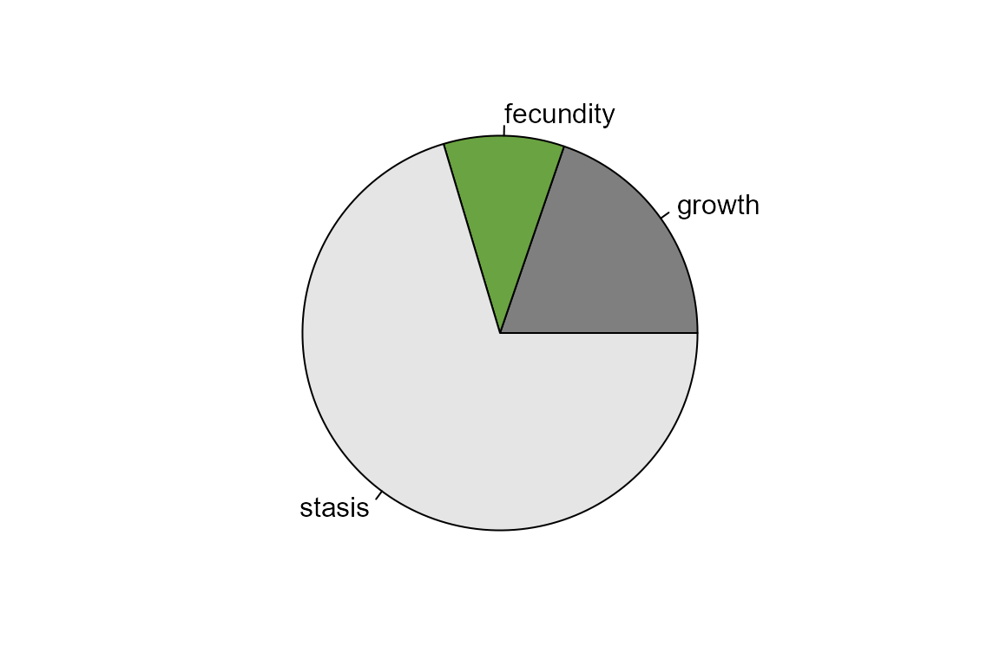
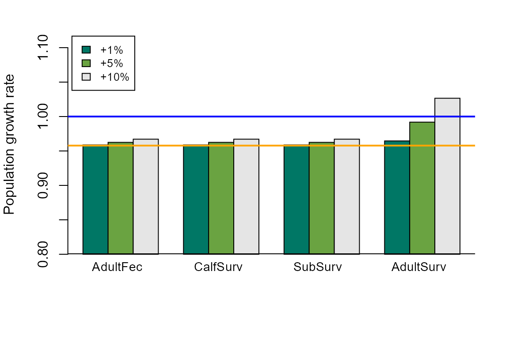

SensitivityElasticity.RmdThis exercise involves calculating sensitivity and elasticity values from a matrix population model. We will also explore using these metrics to address relevant research questions.
First, we’ll choose a matrix for this exercise and name it mat. We’ll create a Serengeti giraffe population matrix for this example, but these functions also work with matrices in COMPADRE and COMADRE!
giraffe <- matrix(c(0, 0, 0.24, 0.57, 0, 0, 0, 0.79, 0.84), nrow=3, byrow=TRUE,
dimnames=list(c("calf","subadult","adult"),
c("calf","subadult","adult")))
mat <- giraffe
mat
#> calf subadult adult
#> calf 0.00 0.00 0.24
#> subadult 0.57 0.00 0.00
#> adult 0.00 0.79 0.84Next, we’ll calculate the left and right eigenvectors. The right eigenvector is the stable stage distribution (w), and the left eigenvector contains the reproductive values (v).
From these, we can calculate the sensitivties matrix (S) and elasticities matrix (E). Note that the sensitivies matrix involves matrix multiplication, whereas the elasticities matrix uses the Hadamard product, which is a simple element-by-element multiplication.
senmat <- Re(v[1,] %*% t(w[,1]))
emat <- (1/(Re(eigen(mat)$values[1]))) * senmat * mat
senmat
#> [,1] [,2] [,3]
#> [1,] 0.09871191 0.05874458 0.3939444
#> [2,] 0.16587133 0.09871191 0.6619676
#> [3,] 0.20110408 0.11967932 0.8025762
emat
#> calf subadult adult
#> calf 0.00000000 0.00000000 0.09871191
#> subadult 0.09871191 0.00000000 0.00000000
#> adult 0.00000000 0.09871191 0.70386427You may want to check these against the outputs from the popbio package. In the sensitivity function, what does zero = FALSE mean? Which option should you choose?
sensitivity(mat, zero = FALSE)
#> calf subadult adult
#> calf 0.09871191 0.05874458 0.3939444
#> subadult 0.16587133 0.09871191 0.6619676
#> adult 0.20110408 0.11967932 0.8025762
elasticity(mat)
#> calf subadult adult
#> calf 0.00000000 0.00000000 0.09871191
#> subadult 0.09871191 0.00000000 0.00000000
#> adult 0.00000000 0.09871191 0.70386427Because elasticity values sum to one, we can sum them across the transition rates of the same type and compare the effects of different types of transition on lambda. This example assumes the first row of the matrix includes the fecundity values, and stasis and growth transitions are grouped together. You may need to adjust this code if your chosen matrix is set up differently.
sumfec <- sum(emat[1,2:3])
sumgrow <- sum(emat[2,1],emat[3,1],emat[3,2])
sumstasis <- sum(diag(emat),emat[2,3])
par(mar=c(2, 2, 2, 2))
pie(c(sumgrow,sumfec,sumstasis), col = c("gray50", "#6AA341", "gray90"),
labels=c("growth", "fecundity", "stasis"))
We can also simulate proportional changes in transition rates and calculate the resulting lambdas. This will help to answer questions along the lines of “How much do we need to change transition rate x in order to obtain the desired population growth rate?”
First, we’ll choose the amounts that we wish to change the transition rates. Here, it is set up as multipliers to the transition probability, so that 1.01 indicates a 1% increase in the transition probability. If your matrix is for an increasing population, you may want to simulate reductions in transition rates. Depending on your question and specific matrix, you may have to adjust these values through trial and error.
vals <- c(1.01, 1.05, 1.1)Next, we’ll sequentially change each transition probability and calculate the resulting lambda. The following code will create a list, with one list object for each different amount of change specified above. Each list object is a matrix containing the resulting lambdas as each transition probability is changed. There are of course other ways to do this. Feel free to experiment with your preferred method!
results <- list()
for (x in 1:length(vals)) {
testlam <- matrix(0, nrow=nrow(mat), ncol=nrow(mat))
for (i in c(1:nrow(mat))) {
for (j in c(1:nrow(mat))) {
if (mat[i,j] == 0) {testlam[i,j] <- 0} else {
tempmat <- mat
tempmat[i,j] <- mat[i,j]*vals[x]
testlam[i,j] <- Re(eigen(tempmat)$values[1])
}
}
}
results[[x]] <- testlam
}We can plot the resulting lambdas as a function of the changes to the different transition rates. You may need to change the plot limits, legends, colors, etc. as appropriate. Because lambda values tend to be near 1.0, we’ll start the y-axis of the plot at 0.8.
output <- matrix(NA, nrow=length(vals), ncol=length(which(as.vector(t(results[[1]])) >0)))
for (w in c(1: length(vals))) {
output[w,] <- as.vector(t(results[[w]]))[which(as.vector(t(results[[w]])) >0)]
}
lower <- 0.8
par(mar=c(5, 4, 2, 2))
barplot(output-lower, beside=TRUE, ylim=c(lower, 1.12), ylab="Population growth rate",
col=c("#007765","#6AA341","gray90"), offset= lower)
abline(h=lower, lwd=2)
abline(h=1.0, lwd=2, col="blue")
abline(h= (Re(eigen(mat)$values[1])), lwd=2, col="orange")
legend("topleft", inset=c(0.01,0.01), c("+1%","+5%","+10%"),
fill=c("#007765","#6AA341","gray90"), cex=0.8)
text(x=c(3.7,7.7,11.65,15.8), y=0.78,
labels=c("AdultFec","CalfSurv","SubSurv","AdultSurv"),
pos=2, xpd=TRUE, cex=0.9)